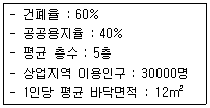
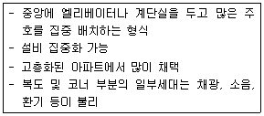
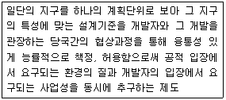
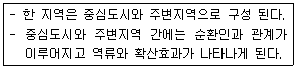
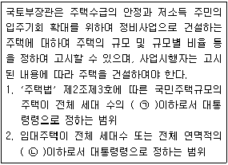

도시계획기사 (2016-05-08 기출문제)
1과목: 도시계획론
1. 토지이용 관련이론 중 동심원 지대이론에 대한 설명으로 틀린 것은?
- 제3지대는 근로자 주거지대에 해당된다.
- 일반적인 구조는 5개의 동심원으로 구성된다.
- 호이트가 1939년 논문을 통해 독자적으로 전개한 이론이다.
- 도시 성장의 일반적인 과정 속에는 집중과 분산의 개념이 동시에 포함된다고 본다.
(정답률: 85%)

2. 관리지역 내 보전관리지역 용적률의 최대한도 기준으로 옳은 것은?(오류 신고가 접수된 문제입니다. 반드시 정답과 해설을 확인하시기 바랍니다.)
- 80% 이하
- 70% 이하
- 60% 이하
- 50% 이하
(정답률: 64%)
3. 다음 중 존 프리드만(J. Friedmann)이 주장한 교류적 계획(Transactive Planning)에 대한 설명으로 옳지 않은 것은?
- 현장 조사나 자료 분석보다는 개인 상호간의 대화를 통한 사회적 학습의 과정을 형성하는 데 중점을 둔다.
- 인간의 존엄성에 기초를 두고 있는 신휴머니즘(New Humanism)의 철작적 사고에서 파생하였다.
- 계획의 집행에 직접적으로 영향을 받는 사람들과의 상호 교류와 대화를 통하여 계획을 수립하여야 한다.
- 계획의 직접적 영향을 받는 사람들조차도 무관심한 계획안으로부터 발생할 수 있는 이익을 주민의 관점에서 지지하였다.
(정답률: 76%)
4. 지리정보시스템(GIS)에서 활용하는 자료에 대한 설명으로 옳은 것은?
- GIS의 자료는 크게 도형자료와 속성자료로 구분된다.
- 래스터 자료는 점을 자료 저장과 표현의 기본 단위로 이용한다.
- 래스터 자료는 저장의 기본 단위 크기를 크게 할수록 정밀도가 향상된다.
- 자료 구조 측면에서 GIS자료는 그리드(grid)와 래스터(raster)자료로 구분된다.
(정답률: 80%)
5. 기준년도의 인구와 출생률, 사망률 ,인구이동 등의 인구변화 요인을 고려하여 장래인구를 추정하는 인구예측방법은?
- 정주모형법
- 집단생잔법
- 비교유추법
- 로지스틱법
(정답률: 87%)
6. 완충녹지에 관한 사항이 아닌 것은?
- 기능 : 도시의 자연적 환경을 보전하거나 이를 개선하고 이미 자연이 훼손된 지역을 복원ㆍ개선함으로써 도시경관을 향상
- 설치기준 : 완충녹지의 폭은 원인시설에 접한 부분부터 최소 10m 이상
- 설치기준 : 철도, 고속국도 및 자동차 전용도로, 지역 간 연결도로 연접구역 계획
- 시설 : 산책로, 벤치 등의 연결녹지에 설치 가능한 시설물에 준하여 설치
(정답률: 84%)
7. 요소모형에 의한 인구 추정에 고려되지 않는 요소는?
- 상주인구
- 사망인구
- 유입ㆍ유출인구
- 출생인구
(정답률: 83%)
8. 다음 중 각 층의 바닥 면적이 500m2이고 용적률이 200%인 20층 건축물의 대지면적은 얼마인가?
- 1300m2
- 2000m2
- 5000m2
- 6500m2
(정답률: 87%)
9. 다음 기반시설 중 유통ㆍ공급시설이 아닌 것은?
- 방송ㆍ통신시설
- 유통업무설비
- 유류저장 및 송유설비
- 방수설비
(정답률: 87%)
10. 지구단위계획에 대한 설명으로 틀린 것은?
- 일반 도시계획보다 구체화된 특수계획이다.
- 일반 도시계획에 비해 상대적으로 입체적 계획이다.
- 계획 지역을 체계적이고 계획적으로 관리하기 위하여 수립하는 도시관리계획이다.
- 일반 도시계획에 비해 상대적으로 소극적인 계획이다.
(정답률: 93%)
11. 우리나라의 도시개발정책이 지향해야 할 방향으로 옳지 않은 것은?
- 개발 지향적 도시계획
- 지속가능한 도시계획
- 도ㆍ농 통합적 도시계획
- 자원ㆍ에너지 절약형 도시계획
(정답률: 88%)
12. 국토의 계획 및 이용에 관한 법률에서 지정한 용도구역으로만 나열된 것은?
- 개발제한구역, 도시개발예정구역, 특정시설 제한구역
- 개발제한구역, 도시자연공원구역, 수산자원 보호구역
- 시가화조정구역, 도시개발예정구역, 문화재 보호구역
- 개발제한구역, 수산자원보호구역, 특정시설 제한구역
(정답률: 75%)
13. 다음 중 도시 중심부에 도심광장인 아고라를 배치하여 시민들의 교역, 사교 및 집회장으로 활용한 시대의 도시는?
- 고대 그리스 도시
- 중세 중국 도시
- 중세 유럽 도시
- 고대 메소포타미아 도시
(정답률: 93%)
14. 다음 중 , 의 도로 배치간격 기준을 옳게 나열한 것은?
- ㉠ : 250m 내외, ㉡ : 500m 내외
- ㉠ : 500m 내외, ㉡ : 250m 내외
- ㉠ : 500m 내외, ㉡ : 1km 내외
- ㉠ : 1km 내외, ㉡ : 500m 내외
(정답률: 87%)
15. 참여정부에서 국가의 균형개발을 구현하기 위하여 계획한 정책 수단으로서의 도시개발에 해당되지 않는 것은?
- 행정중심복합도시
- 혁신도시
- 기업도시
- 컴팩트시티
(정답률: 69%)
16. 도로의 구분 중 기능별 구분에 해당되지 않는 것은?
- 주간선도로
- 국지도로
- 고속도로
- 특수도로
(정답률: 73%)
17. 도시공원 및 녹지 등에 관한 법률상 주제공원에 해당되지 않는 것은?
- 어린이공원
- 묘지공원
- 문화공원
- 수변공원
(정답률: 83%)
18. 인구성장의 상한선이 있는 것으로 가정하여 대도시 지역의 인구예측에 유용하게 사용될 수 있는 S자형의 비대칭곡선 형태를 띠는 인구추정모형은?
- 지수성장모형
- 수정된 지수성장모형
- 곰페르츠모형
- 비율예측모형
(정답률: 85%)
19. 국토의 계획 및 이용에 관한 법률에서 중고층주택을 중심으로 편리한 주거환경을 조성하기 위한 목적으로 지정하는 용도지역은?
- 제2종전용주거지역
- 제3종일반주거지역
- 준주거지역
- 제2종일반주거지역
(정답률: 68%)
20. 국토의 계획 및 이용에 관한 법률에 따른 도시ㆍ군관리계획에 해당되지 않는 것은?
- 용도지역의 지정 또는 변경에 관한 계획
- 택지개발예정지구의 지정에 관한 계획
- 지구단위계획구역의 지정 또는 변경에 관한 계획
- 기반시설의 설치ㆍ정비 또는 개량에 관한 계획
(정답률: 70%)
2과목: 도시설계 및 단지계획
21. 공원ㆍ녹지체계의 유형 중 일정 폭의 녹지를 직선적으로 길게 조성하는 경우를 말하는 것은?
- 집중형
- 분산형
- 격자형
- 대상형
(정답률: 77%)
22. 다음 중 도보권 근린공원(주로 도보권 안에 거주하는 자의 이용에 제공할 것을 목적으로 하는 근린공원)의 유치거리와 규모의 기준이 옳게 나열된 것은?
- 500m 이하, 30000m2 이상
- 500m 이하, 50000m2 이상
- 1000m 이하, 30000m2 이상
- 1000m 이하, 50000m2 이상
(정답률: 71%)
23. 도시설계 기법 중 경험주의적 전통에 입각한 도시설계가로 평가받는 사람은?
- 르 꼬르뷔지에(Le Corbusier)
- 알도 로시(Aldo Rossi)
- 롭 크리에(Rob Krier)
- 고든 쿨렌(Gordon Cullen)
(정답률: 69%)
24. 구획도로망의 구성형식에 관한 설명 중 틀린 것은?
- 격자형 – 도로의 위게가 불명확하고, 통과 교통이 허용되어 안전성이 떨어진다.
- 티(T)자형 – 격자형에 비하여 주행속도가 낮고, 단조로운 가구가 형성된다.
- 루프형 – 가구 내부에 주민에게 독점적으로 활용되는 쾌적한 도로공간이 형성된다.
- 쿨데삭형 – 구획도로와 별도로 보행자전용 도로를 설치하는 것은 불가능하다.
(정답률: 80%)
25. 경관조성의 기본방향으로 틀린 것은?
- 조화와 개성을 부여한다.
- 지역의 기후, 식생, 지형 등 자연조건에 순응한다.
- 보행자공간을 중심으로 휴식, 놀이, 교육, 교류의 공간을 배치한다.
- 인간척도 보다는 도시의 상징이 될 수 있는 랜드마크를 우선 발굴 또는 조성한다.
(정답률: 89%)
26. 계획단위개발(PUD) 방식의 문제점 및 가능성에 대한 내용으로 옳지 않은 것은?
- 공동 오픈스페이스 확보가 어렵다.
- 평범한 고밀도 단지를 형성할 우려가 있다.
- 승인과정상 자치단체의 관리능력이 강화된다.
- 계획단위개발의 제안, 심사, 협상, 공청회 등 시행과정에 과도한 시간이 소요된다.
(정답률: 71%)
27. 도시개발법상 도시지역 안에 도시개발구역으로 지정할 수 있는 공업지역의 규모는 얼마 이상을 기준으로 하는가?
- 10000m2
- 20000m2
- 30000m2
- 50000m2
(정답률: 83%)
28. 다음과 같은 도시계획 조건에서 소요되는 상업지역의 적정면적은?

- 15ha
- 20ha
- 150ha
- 200ha
(정답률: 64%)
29. 라이트(H. Wright)와 스타인(C. Stein)이 래드번(Radburn)단지계획에서 제시한 기본원리로 옳지 않은 것은?
- 자동차 통과도로를 위한 슈퍼블록의 구성
- 기능에 따른 4가지 종류의 도로 구분
- 보도와 차도(고가차도)의 입체적 분리
- 주택단지 어디로나 통할 수 있는 공동의 오픈 스페이스 조성
(정답률: 74%)
30. 다음과 같은 특징을 갖는 공동주택의 주호 형식은?

- 단차형
- 탑상형
- 편복도 판상형
- 중복도 판상형
(정답률: 67%)
31. 다음 중 공동구의 설치로 인한 장점으로 옳지 않은 것은?
- 도시미관의 향상
- 설비갱신의 용이
- 방재효율의 향상
- 초기 설치비용의 절감
(정답률: 85%)
32. 도시ㆍ군계획시설의 결정ㆍ구조 및 설치기준에 관한 규칙상 도로를 규모별로 구분할 때 소로 1류의 기준은?
- 폭 15m 이상 20m 미만인 도로
- 폭 12m 이상 15m 미만인 도로
- 폭 10m 이상 12m 미만인 도로
- 폭 8m 이상 10m 미만인 도로
(정답률: 69%)
33. 단지계획 수립과정의 순서가 옳은 것은?
- 조사분석→목표설정→기본구상ㆍ대안설정→기본계획ㆍ기본설계→실시설계ㆍ집행계획
- 목표설정→조사분석→기본계획ㆍ기본설계→기본구상ㆍ대안설정→실시설계→집행계획
- 조사분석→목표설정→기본계획ㆍ기본설계→기본구상ㆍ대안설정→실시설계ㆍ집행계획
- 목표설정→조사분석→기본구상ㆍ대안설정→기본계획ㆍ기본설계→실시설계ㆍ집행계획
(정답률: 64%)
34. 다음 중 수퍼블록(super block)의 장점으로 옳지 않은 것은?
- 보도와 차도의 완전한 분리가 가능
- 충분한 공동의 오픈스페이스 확보 가능
- 건물을 집약화함으로써 고층화ㆍ효율화가 가능
- 대형 가구의 내부에 자동차의 통과를 생성하여 도로율 증가 가능
(정답률: 83%)
35. 건축법상 전용주거지역이나 일반주거지역에 건축물을 건축하는 경우에는 높이 9미터를 초과하는 부분에 대하여 정북 방향으로의 인접 대지경계선으로부터 해당 건축물 각 부분 높이의 얼마 이상을 띄어서 건축하여야 하는가?
- 1/2이상
- 1/3이상
- 1/5이상
- 1/10이상
(정답률: 76%)
36. 다음 중 영국의 계획도시 할로우(Harlow)에 관한 설명으로 옳지 않은 것은?
- 고밀도 개발을 원칙으로 하였다.
- 런던 주변에 개발된 초기 뉴타운의 대표적인 예이다.
- 주택지는 크게 4개의 그룹으로 나누어 그 내부에 근린주구를 배치하였다.
- 도시 내의 간선도로는 주택지 그룹 사이에 있는 녹지 속을 통과한다.
(정답률: 72%)
37. 도시설계관련 학자들의 연구 내용이 잘못 연결된 것은?
- Kevin Lynch – 도시의 이미지
- Gorden Cullen – 연속시각(Serial Vision) 이론
- Christopher Alexander – 전이공간
- Oscar Newman – 방어공간(defensible space)
(정답률: 56%)
38. 다음 중 생활권의 크기가 작은 것부터 큰 순서대로 바르게 나열된 것은?
- 인보구→근린분구→근린주구
- 인보구→근린주구→근린분구
- 근린분구→근린주구→인보구
- 근린분구→인보구→근린주구
(정답률: 84%)
39. 다음 중 생활권 위계에 따른 공공편익시설의 연결이 옳지 않은 것은?
- 제1차 생활권(소생활권) - 주민센터
- 제1차 생활권(소생활권) - 초등학교
- 제3차 생활권(대생활권) - 소방서
- 제3차 생활권(대생활권) - 중학교
(정답률: 80%)
40. 노외주차장의 구조ㆍ설비기준에서 출입구가 2개 이상인 경우 직각주차형식의 최소 차로 너비는? (단, 이륜자동차전용 노외주차장은 고려하지 않는다.)
- 3.0m
- 3.5m
- 4.5m
- 6.0m
(정답률: 54%)
3과목: 도시개발론
41. 도시개발 밀도에 관한 내용 중 옳지 않은 것은?
- 단위 토지당 자본의 투입량이 증가하는 경우에는 저밀 개발이 이루어진다.
- 상대적으로 높은 지대를 지불해야 하는 토지에는 고밀 개발을 추구한다.
- 개발 밀도는 토지의 매입비용 또는 지대와 자본 차입에 따른 이자율에 의해 결정된다.
- 건물 수요가 많은 곳에서는 거눔ㄹ의 분양가격, 지대가 높아진다.
(정답률: 83%)
42. 마케팅 목표를 이루기 위하여 마케팅 활동에서 사용하는 여러 가지 전략을 종합적으로 균형이 잡히도록 조정ㆍ구성하는 마케팅믹스(4P's Mix)의 4P로 옳은 것은?
- Property, Price, Place, Pride
- Property, Price, Purpose, Pride
- Product, Price, Place, Promotion
- Product, Price, Purpose, Promotion
(정답률: 78%)
43. 다음 중 역세권에 대한 설명으로 옳지 않은 것은?
- 좁은 의미로 역사로부터 타 교통수단에 의존하지 않고 도보로 도달할 수 있는 지역을 뜻한다.
- 역사를 중심으로 작은 지역을 이룰 수 있는 공간으로, 도시민들에게 서비스나 편의를 제공한다.
- 최근에는 역을 중심으로 한 복합적 토지이용을 지양하고 수송의 역할에 충실한 역세권을 개발하려고 한다.
- 기차의 정착에 따라 종착역세권, 환승역세권, 통과역세권으로 나누어 볼 수 있다.
(정답률: 79%)
44. 도시개발관련법과 이에 따른 개발사업의 연결이 틀린 것은?
- 도시개발법 – 도시개발사업
- 택지개발촉진법 – 주택재건축사업
- 도시 및 주거환경정비법- 주거환경개선사업
- 국토의 계획 및 이용에 관한 법률 – 도시계획 시설사업
(정답률: 82%)
45. 지방공사와 지방공단에 대한 설명으로 옳지 않은 것은?
- 지방공사는 지방자치단체 단독으로 설립할 수 있다.
- 지방공단은 지방자치단체 단독으로 설립할 수 있다.
- 지방공사는 자본조달 시 민간출자에 의한 증자가 가능하다.
- 지방공단은 자본조달 시 민간출자에 의한 증자가 가능하다.
(정답률: 67%)
46. 압축도시(Compact City)에 대한 설명으로 틀린 것은?
- 압축도시의 개념은 직주근접과 관련이 있다.
- 교외지역 주거지를 저밀도로 확산시키는 개발 방식이다.
- 지속가능한 개발이 가능하도록 등장한 도시개발 패러다임 중 하나이다.
- 환경부하를 최소화하고 정주지 개발의 효율성을 높이려는 목적을 갖는다.
(정답률: 83%)
47. 다음 중 지분조달방식의 일반적인 특징이 아닌 것은?
- 투자금액을 상환하지 않아도 된다.
- 회사 통제권을 일부를 포기해야 한다.
- 사업자가 현금이 긴요할 경우에는 선호되지 않는다.
- 지분투자자가 항상 사업계획에 동의하는 것은 아니므로 이에 따른 문제 발생도 고려해야 한다.
(정답률: 64%)
48. 도시개발수요를 분석하기 위한 정성적 예측모형 중 조사하고자 하는 특정사항에 대하여 전문가 집단을 대상으로 반복 앙케이트를 수행하여 의견을 수집하는 방법은?
- 델파이법
- 지수평활법
- 박스젠킨스법
- 의사결정나무기법
(정답률: 79%)
49. 대중교통역와 대중교통 노선의 거점을 중심으로 보행거리 내에 있는 토지를 복합고밀로 개발하여 대중교통의 이용율을 높이고 교통혼잡과 도시에너지 소비를 경감시키고자 Peter Calthorpe에 의해 처음으로 주창된 것은?
- TDR
- TOD
- PUD
- TOP
(정답률: 80%)
50. 신도시 개발의 경우 준공과 함께 공공시설들은 모두 지방자치단체에 넘겨지게 되는데, 이는 공유재산관리지침 기준에 따른다. 다음 중 인수인계 협의일이 공사 준공일인 것은?
- 도로
- 녹지
- 공동구
- 공공주차장
(정답률: 63%)
51. 다음 중 공공(公共)이 도시개발 과정에 개입하는 다양한 형태에 대한 설명으로 옳지 않은 것은?
- 각종 토지이용규제를 통하여 도시개발을 제어한다.
- 조세정책이 아닌 금융정책을 통해서만 도시개발을 촉진시키거나 지연시키는 효과를 갖는다.
- 개발업자 등의 자격을 제한하는 시장진입 규제, 토지 등의 거래행위에 대한 규제, 각종 부담금등을 통한 개발이익 분배과정에 개입한다.
- 공부(公簿)등을 통해 토지나 건물에 대한 권리관계를 확인하고 보장해 주는 역할을 담당한다.
(정답률: 85%)
52. 부동산 사업 자본 모집을 위한 수단으로서 파트너십에 대한 설명이 틀린 것은?
- 일반 파트너십의 설립은 정식 절차 없이 구두 또는 문서에 의해서도 가능하다.
- 일반 파트너십은 출자 시 유형자산 뿐만 아니라 기술, 아이디어, 노하우와 같은 무형자산도 가능하다.
- 유한 파트너십에서 유한 파트너는 경영과정에 참여할 수 있어 일반 파트너와 달리 무한 책임을 진다.
- 유한책임 파트너십에서는 의무와 채무에 대하여 무한책임을 부담하는 일반 파트너가 존재하지 않는다.
(정답률: 63%)
53. A시에서는 2025년을 목표연도로 도시개발사업을 추진하며 목표연도의 인구를 100,000명으로 추정하고, 가구당 가구원수는 3.5인/가구로 계획하고 있다. 또한 주택보급률은 100%를 목표로 하며, 공가율은 5%로 예측하고 있을 때, 보급되어야할 총 주택호수는 얼마인가?
- 약 30000호
- 약 32000호
- 약 35000호
- 약 37000호
(정답률: 48%)
54. 도시개발기법과 가장 거리가 먼 것은?
- 용도지역제(zoning)
- 계획단위개발(PUD)
- 개발권양도제(TDR)
- 정보화 기반도시개발(u-City)
(정답률: 50%)
55. 시ㆍ도지사(특별자치도지사는 제외한다)는 지정하려는 택지개발지구의 면적이 최고 얼마 이상인 경우 국토교통부장관의 승인을 받아야 하는가?
- 30만m2
- 90만m2
- 100만m2
- 330만m2
(정답률: 62%)
56. 다음 설명에 해당하는 도시개발기법은?

- 마찌쯔쿠리
- 개발권양도제(TDR)
- 계획단위개발(PUD)
- ABC정책
(정답률: 86%)
57. 지방자치단체가 도시의 신시가지나 기존 시가지의 개발 또는 재개발에 소요되는 재원을 미래의 세금수입을 기초로 자금을 조달하는 방법은?
- 조세담보금용(TIF)
- 주택저당증권(MBS)
- 자산담보부증권(ABS)
- 부동산투자신탁제도(REITs)
(정답률: 70%)
58. 도시개발 대상지의 토지 취득방법에 따른 개발 방식에 해당되지 않는 것은?
- 보상방식
- 환지방식
- 혼용방식
- 전면매수방식
(정답률: 76%)
59. 기업금융과 비교하여 프로젝트 파이낸싱이 갖는 특징에 대한 설명으로 옳지 않은 것은?
- 담보 : 사업자산 및 현금흐름
- 사후관리 : 채무불이행시 상환청구권 행사
- 채무수용능력 : 부외금융으로 채무수용능력 제고
- 소구권 행상 : 모기업에 대한 소구권 행사 배제 또는 제한
(정답률: 54%)
60. 21세기 지구환경시대에 등장한 도시개발 패러다임으로 가장 거리가 먼 것은?
- 스마트성장(smart growth)
- 위성도시(satellite town)
- 컴팩트시티(compact city)
- 어반빌리지(unban village)
(정답률: 58%)
4과목: 국토 및 지역계획
61. 지역획정의 원칙은 크게 동질성의 원칙과 기능결합의 원칙으로 구분할 수 있다. 기능결합의 원칙 중 헤겟트(Haggett)의 입지분석을 통한 결절지역의 공간구조요소로 옳지 않은 것은?
- 움직임(movement)
- 네트워크(networks)
- 결절(nodes)
- 기후(climate)
(정답률: 70%)
62. 제3차 수도권정비계획의 주요 정비목표로 옳지 않은 것은?
- 지속가능한 수도권 성장관리기반 구축
- 지방과 더불어 발전하는 수도권 구현
- 동북아 경제중심지로서의 경쟁력 있는 수도권 형성
- 서울에 인구증가를 초래할 산업시설 등의 입지를 강력히 제한하고 중추적 역할만 유지
(정답률: 60%)
63. 다음 중 클라센(L. Klaassen)의 성장률과 소득수준에 의한 지역 분류에 해당하지 않는 것은?
- 번성지역
- 과밀지역
- 저개발지역
- 잠재적 저개발지역
(정답률: 45%)
64. 다음 중 지역계획의 학문적 성격으로 옳지 않은 것은?
- 종합과학적인 학문이다.
- 순수이론을 다루는 학문이다.
- 규범적이고 실천적인 학문이다.
- 공간의 문제를 바탕에 둔 학문이다.
(정답률: 75%)
65. 수도권정비계획법령상 성장관리권역에서 시설의 신설ㆍ증설에 대한 허가가 불가능한 것은?(오류 신고가 접수된 문제입니다. 반드시 정답과 해설을 확인하시기 바랍니다.)
- 수도권에서의 학교 이전
- 총량규제의 내용에 적합한 범위에서의 학교 입학 정원의 증원
- 기존 연수 시설의 건축물 연면적의 100분의 50범위에서의 증축
- 수도권에서 이전하는 연수 시설의 종전 규모의 범위에서의 신축
(정답률: 60%)
66. 중심지 이론(Central place theory)의 기본 가정으로 옳지 않은 것은?
- 지형이 평탄하다.
- 수요가 동일하다.
- 비용은 거리에 반비례하다.
- 접근성이 모든 방향에서 일정하다.
(정답률: 70%)
67. 인구 200만명의 A시와 인구 50만명의 B시가 40km 떨어진 곳에 위치하고 있다. 컨버스의 수정소매인력이론에 의해 제안된 시장분기점은 A시로부터 얼마의 거리에서 형성되는가?
- 10.0km
- 13.3km
- 26.7km
- 30.0km
(정답률: 53%)
68. 제2차 국토종합개발계획 수정계획(1987~1991)에서 설정한 지역경제권에 해당되지 않는 것은?
- 중부권
- 영동권
- 동남권
- 서남권
(정답률: 58%)
69. 토지이용계획의 수립을 위한 도시조사의 범위 중 환경조사의 항목이 아닌 것은?
- 적응성
- 보건성
- 안전성
- 편리성
(정답률: 68%)
70. 지역계획의 발전에 기여하였던 학자와 내용이 옳은 것은?
- 튀넨 – 지대론
- 베버 – 경제지역이론
- 뢰쉬 – 경제기반이론
- 크리스탈러 – 공업입지이론
(정답률: 67%)
71. 도시인구예측모형을 요소모형과 비요소모형 으로 구분할 때, 다음 중 요소모형에 해당하는 것은?
- 선형모형
- 인구이동모형
- 지수성장모형
- 곰페르츠모형
(정답률: 63%)
72. 다음 중 우리나라의 제2차 국토종합개발계획(1982~1991)에서 설정한 대도시 생활권에 해당되지 않는 것은?
- 인천생활권
- 대전생활권
- 부산생활권
- 광주생활권
(정답률: 55%)
73. 제4차 국토종합계획 수정계획(2006~2020)의 도시정책관련 부분으로 틀린 것은?
- 네트워크형 도시체계 형성
- 선계획 후개발 국토이용체제 정립
- 참여와 협력에 기초한 도시계획체제 구축
- 균형잡힌 도시체계 구축 및 정주체계 정비
(정답률: 37%)
74. 다음과 같이 주장한 학자는?

- Haggett
- Myrdal
- Kaldor
- Williamson
(정답률: 58%)
75. 수도권 권역의 구분과 지정에 관한 내용으로 옳지 않은 것은?
- 과밀억제권역 : 인구와 산업이 지나치게 집중되었거나 집중될 우려가 있어 이전하거나 정비할 필요가 있는 지역
- 성장관리권역 : 과밀억제권역으로부터 이전하는 인구와 산업을 계획적으로 유치하고 산업의 입지와 도시의 개발을 적정하게 관리할 필요가 있는 지역
- 자연보전권역 : 한강 수계의 수질과 녹지 등 자연환경을 보전할 필요가 있는 지역
- 이전촉진권역 : 과밀억제권역으로부터 인구 및 산업을 계획적으로 유치하고 산업의 입지와 도시의 적정개발이 필요한 지역
(정답률: 68%)
76. 크리스탈러가 주장한 중심지이론(central place theory)의 포섭원칙이 아닌 것은?
- 중심의 원칙(K=1)
- 시장성 원칙(K=3)
- 교통의 원칙(K=4)
- 행정의 원칙(K=7)
(정답률: 64%)
77. 다음 중 독일의 도시계획관련 제도로 가장 적당한 것은?
- ZAC
- PUD
- F-plan 과 B-plan
- Structure Plan 과 Local Plan
(정답률: 73%)
78. 영국에서는 1930년대 이후 지역개발과 계획의 이론 및 정책적 연구가 활발히 이루어졌다. 이러한 지역계획에 많은 영향을 미친 보고서와 주요내용이 올바르게 연결된 것은?
- 바로우(Barlow)보고서 – 미래의 전원도시
- 아스와트(Uthwatt)보고서 – 공업 재배치
- 스코트(Scott)보고서 – 농촌의 토지이용
- 하워드(Howard)보고서 – 개발이익환수
(정답률: 64%)
79. 다음 중 수도권정비계획의 권역 구분이 아닌 것은?
- 과밀억제권역
- 성장관리권역
- 개발유도권역
- 자연보전권역
(정답률: 64%)
80. 전국의 고용 인구는 5천만명이고 전국의 섬유산업에 종사하는 고용인구는 1백만명이다. 한편 A도시의 고용 인구가 2백만명, A도시의 섬유산업에 종사하는 고용인구가 5만명일 때 A도시 섬유 산업의 입지계수(LQ)는?
- 0.8
- 1.0
- 1.25
- 1.5
(정답률: 57%)
5과목: 도시계획관계법규
81. 체육시설의 설치ㆍ이용에 관한 법률상 신고 체육 시설업에 해당되지 않는 것은?
- 골프 연습장업
- 스키장업
- 빙상장업
- 종합 체육시설업
(정답률: 53%)
82. 다음 중 도로의 구분에 대한 내용으로 옳은 것은?
- 일반도로 : 폭 5m 이상의 도로로서 통상의 교통소통을 위하여 설치되는 도로
- 자전거전용도로 : 폭 1.0m 이상의 도로로서 자전거의 통행을 위하여 설치하는 도로
- 보행자전용도로 : 폭 1.5m 이상의 도로로서 보행자의 안전하고 편리한 통행을 위하여 설치하는 도로
- 보행자우선도로 : 폭 15미터 미만의 도로로서 보행자와 차량이 혼합하여 이용하되 보행자의 안전과 편의를 우선적으로 고려하여 설치하는 도로
(정답률: 61%)
83. 도시개발법상 환지방식으로 사업을 시행하는 경우 시행자가 청산금을 징수하거나 교부하는 시기 기준은? (단, 환지를 정하지 아니하는 토지에 대하여는 고려하지 않는다.)
- 등기완료 후
- 환지처분 공고 후
- 환지계획 인가 후
- 공사시행 완료 보고 후
(정답률: 62%)
84. 도시 및 주거환경정비법상 주택의 규모 및 건설비율에 대한 아래 내용에서 ㉠과 ㉡에 들어갈 내용이 모두 옳은 것은?

- ㉠ 100분의 90, ㉡ 100분의 50
- ㉠ 100분의 50, ㉡ 100분의 30
- ㉠ 100분의 90, ㉡ 100분의 30
- ㉠ 100분의 50, ㉡ 100분의 20
(정답률: 56%)
85. 다음 중 시행자가 도시개발사업의 전부 또는 일부를 환지방식으로 시행하고자 할 때 작성하는 환지 계획에 포함되지 않는 사항은?
- 환지설계
- 도시계획조서
- 필지별로 된 환지 명세
- 필지별과 권리별로 된 청산 대상 토지 명세
(정답률: 59%)
86. 도시 및 주거환경정비법상 용어의 설명으로 틀린 것은?
- 사업시행자 : 정비사업을 시행하는 자
- 주택단지 : '주택법'에 따른 사업계획승인을 받아 주택과 부대ㆍ복리시설을 건설한 일단의 토지
- 토지등소유자 : 주택재건축사업의 경우에는 정비구역 안에 소재한 건축물 및 그 부속토지의 소유자
- 주택재개발사업 : 정비기반시설은 양호하나 노후ㆍ불량 건축물이 밀집한 지역에서 주거환경을 개선하기 위하여 시행하는 사업
(정답률: 63%)
87. 주택법에 따른 간선시설의 종류별 설치범위 기준이 틀린 것은?
- 도로 – 주택단지 밖의 기간이 되는 도로로부터 주택단지의 경계선까지로 하되, 그 길이가 150m를 초과하는 경우로서 그 초과부분에 한한다.
- 상하수도시설 – 주택단지 밖의 기간이 되는 상ㆍ하수도시설로부터 주택단지의 경계선까지의 시설로 하되, 그 길이가 200m를 초과하는 경우로서 그 초과부분에 한한다.
- 지역난방시설 – 주택단지 밖의 기간이 되는 열수송관의 분기점으로부터 주택단지내의 각 기계실입구 차단밸브까지로 한다.
- 통신시설 – 관로시설은 주택단지 밖의 기간이 되는 시설로부터 주택단지 경계선까지, 케이블시설은 주택단지 밖의 기간이 되는 시설로부터 주택단지안의 최초 단자까지로 한다.
(정답률: 47%)
88. 택지개발사업의 시행자가 될 수 없는 자는?
- 주민조합
- 국가
- 한국토지주택공사
- 지방공사
(정답률: 65%)
89. 택지개발예정지구의 해제, 변경, 승인의 취소 또는 변경의 사유로 포괄승계인은 1년 이내 보상금에 일정 금액을 가산하여 시행자에게 지급하고 환매할 수 있다. 이를 무엇이라 하는가?
- 수용권
- 환매권
- 처분권
- 지역권
(정답률: 80%)
90. 주차장법 시행규칙상 노외주차장에 설치할 수 있는 부대시설에 해당되지 않는 것은?(단, 시ㆍ군 또는 구의 조례로 정하는 이용자 편의시설은 고려하지 않는다.)
- 관리사무소
- 공중화장실
- 자동차 관련 수리시설 및 장식품 판매점
- 노외주차장의 관리ㆍ운영상 필요한 편의시설
(정답률: 72%)
91. 다음 중 수도권정비계획법에 따른 인구집중 유발시설의 기준이 틀린 것은?
- '고등교육법'에 따른 학교로서 대학, 산업 대학, 교육대학 또는 전문대학
- '산업집적활성화 및 공장설립에 관한 법률'에 따른 공장으로서 건축물의 연면적이 200m2이상인 것
- 중앙행정기관 및 그 소속 기관의 청사 중 건축물의 연면적이 1000m2이상인 것
- 복합시설이 주용도인 건축물로서 그 연면적이 25000m2이상인 건축물
(정답률: 62%)
92. 택지개발촉진법상 시행자가 택지개발사업을 시행할 때 도시개발법에 의한 도시개발을 실시할 수 있는 경우는?
- 택지개발예정지구와 도시개발구역이 동시에 결정된 경우
- 해당 지역의 토지소유자 및 이해관계인이 동의한 경우
- 국가, 지방자치단체, 학국토지주택공사 전부가 사업시행을 원하지 않는 경우
- 해당 지역의 지가가 인근의 다른 택지개발지구의 지가에 비하여 현저히 높아 환지방식 외의 방법으로는 택지개발이 매우 곤란한 경우
(정답률: 45%)
93. 건축법상 건축물의 요도 분류 시 공동주택에 해당되지 않는 것은?
- 연립주택
- 다중주택
- 아파트
- 다세대주택
(정답률: 61%)
94. 체육시설의 설치ㆍ이용에 관한 법률에 의거하여 필수시설의 경우 사업계획승인을 얻은 시설 또는 등록한 시설별 면적은 어느 규모에서 증축ㆍ개축 또는 변경이 가능한가?
- 100분의 20이내
- 100분의 30이내
- 100분의 40이내
- 100분의 50이내
(정답률: 49%)
95. 다음 중 국토기본법에 따른 국토계획의 구분에 해당되지 않는 것은?
- 부문별계획
- 도종합계획
- 시ㆍ군종합계획
- 권역별계획
(정답률: 47%)
96. 다음 중 국토의 계획 및 이용에 관한 법률상 개발행위의 허가를 받아야 하는 경우에 해당되지 않는 것은?
- 건축물의 건축 또는 공작물의 설치
- 도시계획사업에 의한 토지의 형질변경
- 토지 분할(건축물이 있는 대지의 분할은 제외)
- 녹지지역ㆍ관리지역 또는 자연환경보전지역에 물건을 1개월 이상 쌓아놓는 행위
(정답률: 52%)
97. 도시공원 및 녹지 등에 관한 법률상 하나의 도시지역 안에 있어서의 도시공원의 확보 기준은? (단, 개발제한구역 및 녹지지역을 제외한 도시지역 안에 있어서의 경우는 고려하지 않는다.)
- 해당 도시지역 안에 거주하는 주민 1인당 3m2 이상
- 해당 도시지역 안에 거주하는 주민 1인당 4m2 이상
- 해당 도시지역 안에 거주하는 주민 1인당 5m2 이상
- 해당 도시지역 안에 거주하는 주민 1인당 6m2 이상
(정답률: 53%)
98. 국토의 계획 및 이용에 관한 법률상 시가화 조정구역 내에 설치할 수 없는 것은?
- 종합병원
- 공공도서관
- 119안전센터
- 산림조합의 공동구판장
(정답률: 56%)
99. 다음 중 환지에 의한 도시개발법에서 규정하는 설명이 옳지 않은 것은?
- 청산금은 청산금 교부시에 결정하여야 한다.
- 관련 규정에 의하여 주택으로 환지하는 경우에 동 주택에 대하여는 주택법의 규정에 의한 주택의 공급에 관한 기준을 적용하지 아니한다.
- 시행자는 토지 면적의 규모를 조정할 특별한 필요가 있을 때에는 면적이 작은 토지에 대하여는 과소 토지가 되지 아니하도록 면적을 증가하여 환지를 정하거나 환지대상에서 제외할 수 있다.
- 환지를 정하거나 그 대상에서 제외한 경우에 그 과부족분에 대하여는 종전의 토지 및 환지의 위치ㆍ지목ㆍ면적ㆍ토질ㆍ환경 등 기타의 사항을 종합적으로 고려하여 금전으로 이를 청산하여야 한다.
(정답률: 41%)
100. 도시개발구역의 지정 절차와 효력에 관한 설명 중 옳지 않은 것은?
- 도시개발구역을 지정하고자 할 떄에는 미리 주민의견을 청취하고 관계지방의회의 의견을 들어야 한다.
- 시ㆍ도지사가 계획적인 도시개발이 필요하다고 인정되는 때에는 도시개발구역을 지정할 수 있다.
- 시ㆍ도지사 또는 대도시 시장이 도시개발구역을 지정ㆍ고시한 경우에는 국토교통부장관에게 그 내용을 통보하여야 한다.
- 도시개발구역이 지정ㆍ고시된 경우 해당 도시개발구역은 '국토의 계획 및 이용에 관한 법률'에 의한 도시지역 및 지구단위계획으로 결정ㆍ고시된 것으로 본다.
(정답률: 34%)